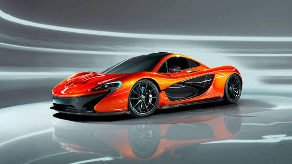

Conheça a McLaren P1
Data de atualização: 03/09/2026

Desempenho, tecnologia e velocidade
A McLaren P1 é um hipercarro híbrido equipado
com um motor V8 3.8 biturbo combinado a um
motor elétrico. O conjunto produz 916 PS e
900 Nm de torque, levando o carro de 0 a
100 km/h em apenas 2,8 segundos.
Engenharia e aerodinâmica
Data de atualização: 03/09/2026

Uma máquina feita para performance
A P1 utiliza uma estrutura leve de fibra de
carbono e aerodinâmica ativa para aumentar
a estabilidade em alta velocidade. Suas asas
móveis podem gerar até 600 kg de downforce,
enquanto a velocidade máxima chega a 350 km/h.